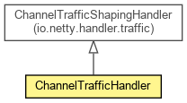

org.waarp.openr66.protocol.networkhandler
Class ChannelTrafficHandler
java.lang.Object
 org.jboss.netty.channel.SimpleChannelHandler
org.jboss.netty.handler.traffic.AbstractTrafficShapingHandler
org.jboss.netty.handler.traffic.ChannelTrafficShapingHandler
org.waarp.openr66.protocol.networkhandler.ChannelTrafficHandler
org.jboss.netty.channel.SimpleChannelHandler
org.jboss.netty.handler.traffic.AbstractTrafficShapingHandler
org.jboss.netty.handler.traffic.ChannelTrafficShapingHandler
org.waarp.openr66.protocol.networkhandler.ChannelTrafficHandler
- All Implemented Interfaces:
- ChannelDownstreamHandler, ChannelHandler, ChannelUpstreamHandler, ExternalResourceReleasable
public class ChannelTrafficHandler
- extends ChannelTrafficShapingHandler

- Author:
- Frederic Bregier
| Methods inherited from class org.jboss.netty.channel.SimpleChannelHandler |
bindRequested, channelBound, channelDisconnected, channelInterestChanged, channelOpen, channelUnbound, childChannelClosed, childChannelOpen, closeRequested, connectRequested, disconnectRequested, exceptionCaught, handleUpstream, setInterestOpsRequested, unbindRequested, writeComplete |
ChannelTrafficHandler
public ChannelTrafficHandler(ObjectSizeEstimator objectSizeEstimator,
Timer timer,
long writeLimit,
long readLimit,
long checkInterval)
- Parameters:
objectSizeEstimator - timer - writeLimit - readLimit - checkInterval -
doAccounting
protected void doAccounting(TrafficCounter counter)
- Overrides:
doAccounting in class AbstractTrafficShapingHandler
Copyright © 2009-2013 Waarp. All Rights Reserved.